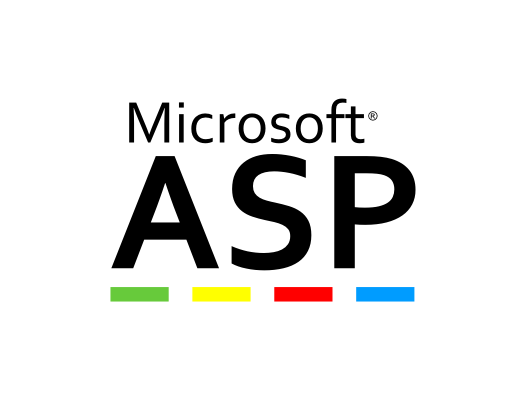

134-3622-2876
134-3622-2876
134-3622-2876
134-3622-2876


ASP（也称为经典ASP，全称Active Server Pages）是 Microsoft 的第一个服务器端脚本语言，最初于 1996 年作为 Internet 信息服务 (IIS 3.0) 的一部分发布。对此进行了改进和开发，于1997 年作为IIS 4.0 的一部分发布的 ASP2.0，然后是 2000 年作为 IIS 5.0 的一部分发布的 ASP3.0。这萌芽了2001年的 ASP+，它是微软 ASP.NET 框架的早期版本，至今仍在使用。
从微软官方的最新公告显示：Windows Server 2022继续支持经典ASP，而Windows Server 2022 的生命周期是2031年10月13日，也就是说ASP可以至少正常使用到2031年。
天天asp开发网成立于2014年5月1日，我们的目标是专注于应用ASP技术实现企业的信息化，办公自动化，为中小企业提供ASP解决方案和产品。
通过多年的努力，我们打造了天天ASP家园网，致力于ASP技术学习交流和资源分享，目前已经是国内最专专业的ASP交流论坛！与此同时开发了订单系统，点餐系统产品和一些企业管理的软件产品：比如：企业ERP，工业阀体选型软件，学校德育系统等企业级产品。
随着我们的技术栈的不断扩展，我们利用ASP已经可以拓展实现很多互联网基础的技术服务，具体有：微信公众号/小程序，爬虫定制/大数据抓取，混合多端APP开发，高端网站设计/商城定制开发，VUE前端开发/美术UI界面设计，Powshell桌面应用开发等。
下面的声明是天天asp开发网旗下产品的隐私保护制度：
1.不搜集有关用户或访问者的任何个人信息；
2.不会与第三方共享统计报告；
3.天天asp在防止敏感信息丢失或误用方面拥有标准的安全措施；
4.不使用 cookie 跟踪任何个人信息。